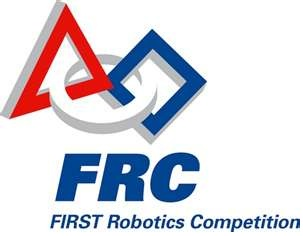

|  |
|
Mission“The varsity sport for the mind,” FRC combines the excitement of sport with the rigors of science and technology. Under strict rules, limited resources, and time limits, teams of 25 students or more are challenged to raise funds, design a team “brand,” hone teamwork skills, and build and program robots to perform prescribed tasks against a field of competitors. It’s as close to “real-world engineering” as a student can get. Volunteer professional mentors lend their time and talents to guide each team. |